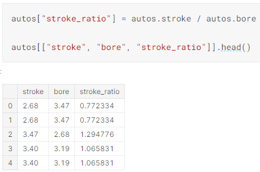
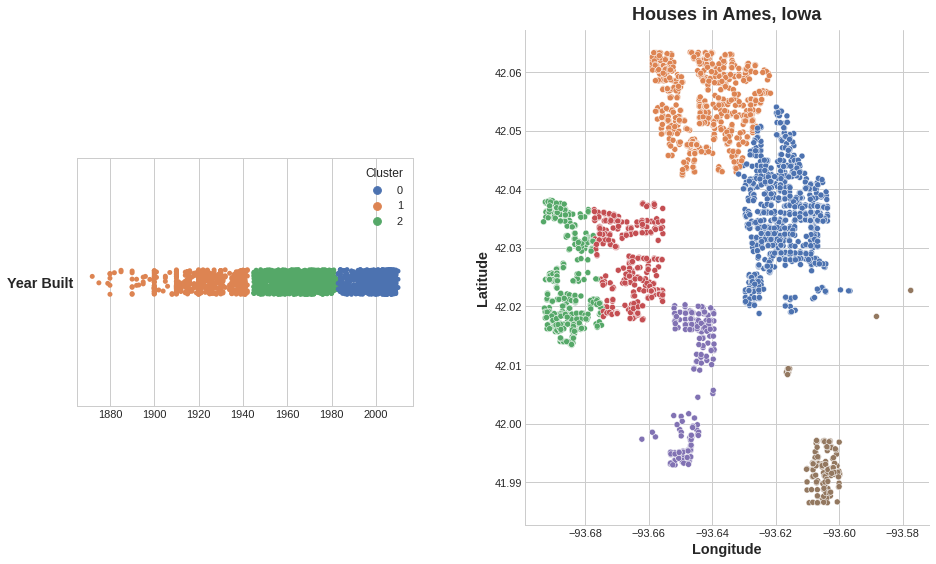

kaggle Feature Engineering
What Is Feature Engineering
- determine which features are the most important with mutual information
- invent new features in several real-world problem domains
- encode high-cardinality categoricals with a target encoding
- create segmentation features with k-means clustering
- decompose a dataset’s variation into features with principal component analysis
The goal of feature engineering
The goal of feature engineering is simply to make your data better suited to the problem at hand.
You might perform feature engineering to:
- improve a model’s predictive performance
- reduce computational or data needs
- improve interpretability of the results
A guiding principle of feature engineering
For a feature to be useful, it must have a relationship to the target that your model is able to learn.
The key idea here is that a transformation you apply to a feature becomes in essence a part of the model itself. Say you were trying to predict the Price of square plots of land from the Length of one side. Fitting a linear model directly to Length gives poor results: the relationship is not linear.
Whatever relationships your model can’t learn, you can provide yourself through transformations. As you develop your feature set, think about what information your model could use to achieve its best performance.
Mutual Information
A great first step is to construct a ranking with a feature utility metric, a function measuring associations between a feature and the target. Then you can choose a smaller set of the most useful features to develop initially and have more confidence that your time will be well spent.
The metric we’ll use is called “mutual information”. Mutual information is a lot like correlation in that it measures a relationship between two quantities. The advantage of mutual information is that it can detect any kind of relationship, while correlation only detects linear relationships.
Mutual information is a great general-purpose metric and especially useful at the start of feature development when you might not know what model you’d like to use yet. It is:
- easy to use and interpret,
- computationally efficient,
- theoretically well-founded,
- resistant to overfitting, and,
- able to detect any kind of relationship
Mutual information and what it measures
Mutual information describes relationships in terms of uncertainty. The mutual information (MI) between two quantities is a measure of the extent to which knowledge of one quantity reduces uncertainty about the other.
Technical note: What we’re calling uncertainty is measured using a quantity from information theory known as “entropy”. The entropy of a variable means roughly: “how many yes-or-no questions you would need to describe an occurance of that variable, on average.” The more questions you have to ask, the more uncertain you must be about the variable. Mutual information is how many questions you expect the feature to answer about the target.
Interpreting mutual information scores
The least possible mutual information between quantities is 0.0. When MI is zero, the quantities are independent: neither can tell you anything about the other. Conversely, in theory there’s no upper bound to what MI can be. In practice though values above 2.0 or so are uncommon. (Mutual information is a logarithmic quantity, so it increases very slowly.)
Here are some things to remember when applying mutual information:
- MI can help you to understand the relative potential of a feature as a predictor of the target, considered by itself.
- It’s possible for a feature to be very informative when interacting with other features, but not so informative all alone. MI can’t detect interactions between features. It is a univariate metric.
- The actual usefulness of a feature depends on the model you use it with. A feature is only useful to the extent that its relationship with the target is one your model can learn. Just because a feature has a high MI score doesn’t mean your model will be able to do anything with that information. You may need to transform the feature first to expose the association.
Scikit-learn has two mutual information metrics in its feature_selection module: one for real-valued targets (mutual_info_regression) and one for categorical targets (mutual_info_classif).

Creating Features
Tips on Discovering New Features
- Understand the features. Refer to your dataset’s data documentation, if available.
- Research the problem domain to acquire domain knowledge. If your problem is predicting house prices, do some research on real-estate for instance. Wikipedia can be a good starting point, but books and journal articles will often have the best information.
- Study previous work. Solution write-ups from past Kaggle competitions are a great resource.
- Use data visualization. Visualization can reveal pathologies in the distribution of a feature or complicated relationships that could be simplified. Be sure to visualize your dataset as you work through the feature engineering process.
Mathematical transforms
Relationships among numerical features are often expressed through mathematical formulas, which you’ll frequently come across as part of your domain research. In Pandas, you can apply arithmetic operations to columns just as if they were ordinary numbers.

Data visualization can suggest transformations, often a “reshaping” of a feature through powers or logarithms.
Counts
Features describing the presence or absence of something often come in sets, the set of risk factors for a disease, say. You can aggregate such features by creating a count.
You could also use a dataframe’s built-in methods to create boolean values. In the Concrete dataset are the amounts of components in a concrete formulation. Many formulations lack one or more components (that is, the component has a value of 0). This will count how many components are in a formulation with the dataframe’s built-in greater-than gt method:
Building-up and breaking-down features
Group transforms
Finally we have Group transforms, which aggregate information across multiple rows grouped by some category. If you had discovered a category interaction, a group transform over that categry could be something good to investigate.
If you’re using training and validation splits, to preserve their independence, it’s best to create a grouped feature using only the training set and then join it to the validation set. We can use the validation set’s merge method after creating a unique set of values with drop_duplicates on the training set:
Tips on Creating Features It’s good to keep in mind your model’s own strengths and weaknesses when creating features. Here are some guidelines:
- Linear models learn sums and differences naturally, but can’t learn anything more complex.
- Ratios seem to be difficult for most models to learn. Ratio combinations often lead to some easy performance gains.
- Linear models and neural nets generally do better with normalized features. Neural nets especially need features scaled to values not too far from 0. Tree-based models (like random forests and XGBoost) can sometimes benefit from normalization, but usually much less so.
- Tree models can learn to approximate almost any combination of features, but when a combination is especially important they can still benefit from having it explicitly created, especially when data is limited.
- Counts are especially helpful for tree models, since these models don’t have a natural way of aggregating information across many features at once.
Clustering With K-Means
Unsupervised algorithms don’t make use of a target; instead, their purpose is to learn some property of the data, to represent the structure of the features in a certain way. In the context of feature engineering for prediction, you could think of an unsupervised algorithm as a “feature discovery” technique.
Clustering simply means the assigning of data points to groups based upon how similar the points are to each other.
Adding a feature of cluster labels can help machine learning models untangle complicated relationships of space or proximity.
Cluster labels as a feature
Applied to a single real-valued feature, clustering acts like a traditional “binning” or “discretization” transform. On multiple features, it’s like “multi-dimensional binning” (sometimes called vector quantization).

It’s important to remember that this Cluster feature is categorical.Here, it’s shown with a label encoding (that is, as a sequence of integers) as a typical clustering algorithm would produce; depending on your model, a one-hot encoding may be more appropriate.
The motivating idea for adding cluster labels is that the clusters will break up complicated relationships across features into simpler chunks. Our model can then just learn the simpler chunks one-by-one instead having to learn the complicated whole all at once. It’s a “divide and conquer” strategy.

K-means clustering
There are a great many clustering algorithms. They differ primarily in how they measure “similarity” or “proximity” and in what kinds of features they work with. The algorithm we’ll use, k-means, is intuitive and easy to apply in a feature engineering context. Depending on your application another algorithm might be more appropriate.
K-means clustering measures similarity using ordinary straight-line distance (Euclidean distance, in other words). It creates clusters by placing a number of points, called centroids, inside the feature-space. Each point in the dataset is assigned to the cluster of whichever centroid it’s closest to. The “k” in “k-means” is how many centroids (that is, clusters) it creates. You define the k yourself.
You could imagine each centroid capturing points through a sequence of radiating circles. When sets of circles from competing centroids overlap they form a line. The result is what’s called a Voronoi tessallation. The tessallation shows you to what clusters future data will be assigned; the tessallation is essentially what k-means learns from its training data.

We’ll focus on three parameters from scikit-learn’s implementation: n_clusters, max_iter, and n_init.
It’s a simple two-step process. The algorithm starts by randomly initializing some predefined number (n_clusters) of centroids. It then iterates over these two operations:
- assign points to the nearest cluster centroid
- move each centroid to minimize the distance to its points
It iterates over these two steps until the centroids aren’t moving anymore, or until some maximum number of iterations has passed (max_iter).
It often happens that the initial random position of the centroids ends in a poor clustering. For this reason the algorithm repeats a number of times (n_init) and returns the clustering that has the least total distance between each point and its centroid, the optimal clustering.

You may need to increase the max_iter for a large number of clusters or n_init for a complex dataset. Ordinarily though the only parameter you’ll need to choose yourself is n_clusters (k, that is). The best partitioning for a set of features depends on the model you’re using and what you’re trying to predict, so it’s best to tune it like any hyperparameter (through cross-validation, say).
Since k-means clustering is sensitive to scale, it can be a good idea rescale or normalize data with extreme values.
Exercise
X = df.copy()
y = X.pop("SalePrice")
# YOUR CODE HERE: Define a list of the features to be used for the clustering
features = ['LotArea', 'TotalBsmtSF', 'FirstFlrSF', 'SecondFlrSF', 'GrLivArea']
# Standardize
X_scaled = X.loc[:, features]
X_scaled = (X_scaled - X_scaled.mean(axis=0)) / X_scaled.std(axis=0)
# YOUR CODE HERE: Fit the KMeans model to X_scaled and create the cluster labels
kmeans = KMeans(n_clusters=10, n_init=10, random_state=0)
X["Cluster"] = kmeans.fit_predict(X_scaled)
# Check your answer
q_2.check()Principal Component Analysis
Just like clustering is a partitioning of the dataset based on proximity, you could think of PCA as a partitioning of the variation in the data. PCA is a great tool to help you discover important relationships in the data and can also be used to create more informative features.
(Technical note: PCA is typically applied to standardized data. With standardized data “variation” means “correlation”. With unstandardized data “variation” means “covariance”. All data in this course will be standardized before applying PCA.)
Principal component analysis

Notice that instead of describing abalones by their 'Height' and 'Diameter', we could just as well describe them by their 'Size' and 'Shape'. This, in fact, is the whole idea of PCA: instead of describing the data with the original features, we describe it with its axes of variation. The axes of variation become the new features.

These new features are called the principal components of the data. The weights themselves are called loadings. There will be as many principal components as there are features in the original dataset: if we had used ten features instead of two, we would have ended up with ten components.
PCA also tells us the amount of variation in each component. We can see from the figures that there is more variation in the data along the Size component than along the Shape component. PCA makes this precise through each component’s percent of explained variance.

The Size component captures the majority of the variation between Height and Diameter. It’s important to remember, however, that the amount of variance in a component doesn’t necessarily correspond to how good it is as a predictor: it depends on what you’re trying to predict.
PCA for feature engineering
The first way is to use it as a descriptive technique. Since the components tell you about the variation, you could compute the MI scores for the components and see what kind of variation is most predictive of your target. That could give you ideas for kinds of features to create – a product of 'Height' and 'Diameter' if 'Size' is important, say, or a ratio of 'Height' and 'Diameter' if Shape is important. You could even try clustering on one or more of the high-scoring components.
The second way is to use the components themselves as features. Because the components expose the variational structure of the data directly, they can often be more informative than the original features. Here are some use-cases:
- Dimensionality reduction: When your features are highly redundant (multicollinear, specifically), PCA will partition out the redundancy into one or more near-zero variance components, which you can then drop since they will contain little or no information.
- Anomaly detection: Unusual variation, not apparent from the original features, will often show up in the low-variance components. These components could be highly informative in an anomaly or outlier detection task.
- Noise reduction: A collection of sensor readings will often share some common background noise. PCA can sometimes collect the (informative) signal into a smaller number of features while leaving the noise alone, thus boosting the signal-to-noise ratio.
- Decorrelation: Some ML algorithms struggle with highly-correlated features. PCA transforms correlated features into uncorrelated components, which could be easier for your algorithm to work with.
PCA basically gives you direct access to the correlational structure of your data.
PCA Best Practices There are a few things to keep in mind when applying PCA:
- PCA only works with numeric features, like continuous quantities or counts.
- PCA is sensitive to scale. It’s good practice to standardize your data before applying PCA, unless you know you have good reason not to.
- Consider removing or constraining outliers, since they can an have an undue influence on the results.
Target Encoding
target encoding, is instead meant for categorical features. It’s a method of encoding categories as numbers, like one-hot or label encoding, with the difference that it also uses the target to create the encoding. This makes it what we call a supervised feature engineering technique.
A target encoding is any kind of encoding that replaces a feature’s categories with some number derived from the target.
This kind of target encoding is sometimes called a mean encoding. Applied to a binary target, it’s also called bin counting. (Other names you might come across include: likelihood encoding, impact encoding, and leave-one-out encoding.)
Smoothing
An encoding like this presents a couple of problems, however. First are unknown categories. Target encodings create a special risk of overfitting, which means they need to be trained on an independent “encoding” split. When you join the encoding to future splits, Pandas will fill in missing values for any categories not present in the encoding split. These missing values you would have to impute somehow.
Second are rare categories. When a category only occurs a few times in the dataset, any statistics calculated on its group are unlikely to be very accurate.
A solution to these problems is to add smoothing. The idea is to blend the in-category average with the overall average. Rare categories get less weight on their category average, while missing categories just get the overall average.
When choosing a value for m, consider how noisy you expect the categories to be. Does the price of a vehicle vary a great deal within each make? Would you need a lot of data to get good estimates? If so, it could be better to choose a larger value for m; if the average price for each make were relatively stable, a smaller value could be okay.
Use Cases for Target Encoding Target encoding is great for:
- High-cardinality features: A feature with a large number of categories can be troublesome to encode: a one-hot encoding would generate too many features and alternatives, like a label encoding, might not be appropriate for that feature. A target encoding derives numbers for the categories using the feature’s most important property: its relationship with the target.
- Domain-motivated features: From prior experience, you might suspect that a categorical feature should be important even if it scored poorly with a feature metric. A target encoding can help reveal a feature’s true informativeness.